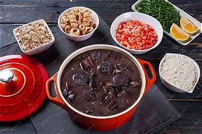
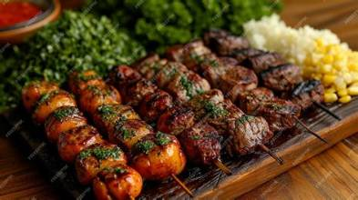
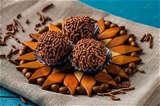

Feijoada
Es uno de los platillos más conocidos del país. Se prepara principalmente con frijoles negros y diferentes carnes. Generalmente se acompaña con arroz, farofa, col y rodajas de naranja. Es común encontrarla en reuniones y restaurantes.
Una gastronomía diversa que cuenta historias a través de sus ingredientes.
La gastronomía brasileña es muy variada y refleja la diversidad cultural y geográfica del país. Sus platillos combinan influencias indígenas, africanas y portuguesas, además de aportaciones de comunidades inmigrantes.
Entre sus ingredientes más utilizados se encuentran el arroz, los frijoles, la mandioca, el maíz, el pescado, las carnes, las frutas tropicales y diferentes especias. La preparación de los alimentos cambia de acuerdo con la región, el clima y las tradiciones familiares.

La feijoada es uno de los platillos más representativos de Brasil.Es uno de los platillos más conocidos del país. Se prepara principalmente con frijoles negros y diferentes carnes. Generalmente se acompaña con arroz, farofa, col y rodajas de naranja. Es común encontrarla en reuniones y restaurantes.
Es un pequeño pan elaborado con almidón de mandioca, queso, huevos y otros ingredientes. Tiene una textura suave y ligeramente elástica. Es muy popular en desayunos y meriendas.
Es un guiso de pescado o mariscos que se prepara con ingredientes como tomate, cebolla, pimientos y hierbas. Existen diferentes versiones regionales, especialmente en Bahía y Espírito Santo.
Es una tradición gastronómica muy popular. Consiste en preparar diferentes cortes de carne a la parrilla y compartirlos durante reuniones familiares o celebraciones. Es especialmente reconocido en el sur del país.

En Brasil, muchas comidas representan momentos de convivencia. Los almuerzos familiares, las reuniones de fin de semana y las celebraciones suelen acompañarse de alimentos preparados para compartir.
El churrasco es un ejemplo de esta tradición. En diferentes regiones, las personas se reúnen alrededor de una parrilla para preparar carnes y acompañamientos. Las churrasquerías también forman parte de la oferta gastronómica del país.

Los brigadeiros son dulces tradicionales elaborados principalmente con leche condensada y chocolate.Es un dulce pequeño y redondo elaborado con leche condensada, chocolate y mantequilla. Normalmente se cubre con chocolate granulado y es muy común en cumpleaños y fiestas.
Es un postre de color amarillo intenso preparado principalmente con yemas de huevo, azúcar y coco. Tiene una textura suave y una superficie brillante.
Brasil cuenta con una gran variedad de frutas, como maracuyá, mango, guayaba, papaya y açaí. Muchas se consumen frescas o se utilizan para elaborar jugos y postres.
Es una bebida muy conocida en Brasil que utiliza el guaraná, un fruto originario de la Amazonía. También existen refrescos elaborados con su sabor.
Es una bebida dulce obtenida al prensar la caña de azúcar. Se consume especialmente en mercados y puestos tradicionales.
Es un fruto amazónico que suele servirse en preparaciones frías acompañado de frutas, granola y otros ingredientes.
En las zonas costeras son comunes los pescados y mariscos, mientras que otras regiones destacan por sus carnes, frijoles, raíces y productos agrícolas.